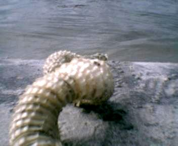
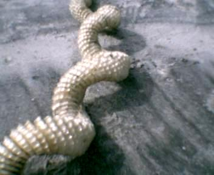
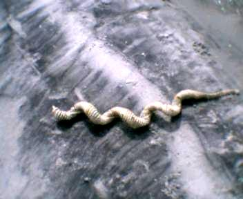
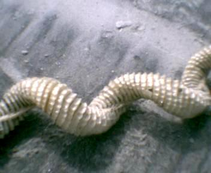

Странная находка на берегу.
Помогите определить, что это. Сей объект я обнаружил в море у самого берега.
В принципе это не совсем море, а пролив из океана в болото. Сперва я подумал,
что это сброшенная змеей кожа. Но когда я вытащил "это" на берег, мне
в первый момент показалось что это - чей-то скелет. А потом я совершенно
запутался. Во первых, "позвонки" - внутри полые и состоят и эластичного
упругого материала. "Позвоночник" проходит не в середине объекта а
по краю. Это хорошо видно на нижнем снимке. Происхождение этого предмета,
несомненно, животное или растительное. Длина - около метра. Вес примерно
0.5 кг. Еще раз подчеркиваю, это не змеиная кожа. Это соединенные между
собой диски из упругого материала. Быть может кто-то знает что это?
Дополнение. Объект опознан. Это штука изготавливается крупными моллюсками
и содержит их яйца.




Назад|На главную